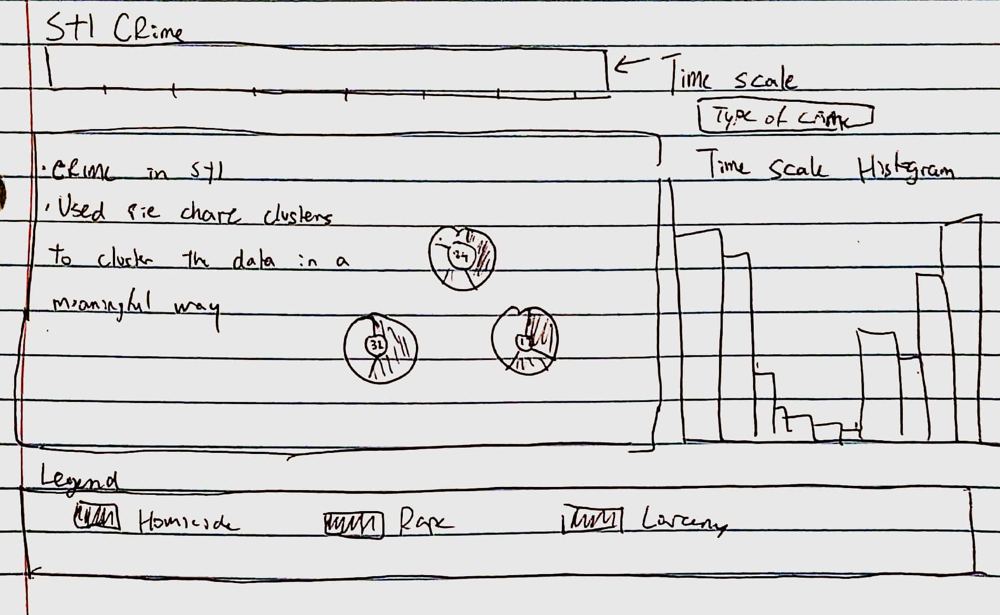

Basic Info
Crime MapJoel Ki – joelki (448565) – joelki@wustl.edu
Shane Blair – sblair (448740) – sblair@wustl.edu
https://github.com/washuvis/crime/ (Private)
Background and Motivation
Our initial motivation was thinking back to how many crimes have occurred in our area recently. We live east of Kayaks, which has been a hotspot for many car thefts and burglaries recently. My roommates and I have been very worried about what to do about increasing crime, as WashU’s efforts to curb crime have seem to have no effect. This is understandable, as it is difficult to gather the resources necessary to properly fight crime in multiple locations. This is why we have decided to tackle the problem of dealing with crime around WashU, and we have come to the conclusion that, in order to combat this crime as students, the best thing that we can do is find ways to be safer. We can change our habits and behaviors easily, but there must be a way to know what behaviors are safer than others. This is where the visualization of data can come into play.WashU does not currently have any way to see much about the crimes that occur in the area. There are crime maps available to see the locations of crimes that occur, but these maps are not focused on WashU, instead they are general municipality crime zones. Further, these crime maps only allow the view of one aspect of crime: location. We believe that there is more to the patterns of crime than just location, and we hope that what we will have to present at the end of the semester for this project will allow users to better understand the patterns of crime in the WashU area by showcasing the data through interaction and discovery.
Project Objectives
We hope to answer the questions that follow:- What crimes are occurring in the WashU area?
- What are ways that these crimes can be visualized, for example by location, by time, by description?
- What is the best way to organize the crimes in a display for the user? Does one of the visualization methods above stand out from the rest?
- What are the trends in the crime data that are most crucial to helping us as students be safe?
- Are there certain locations, times, or items that lead to the highest rates of crime? Are there other aspects of crime other than those three that affect those levels?
Benefits:
- Improve the safety of students with minimal/no cost to students or the university
- Discovery of trends that could aid in the addition of resources by the police/university
- Better understanding of the nature of crime in our area, in a nondiscriminatory way
Data
Our data will be collected from WashU’s Daily Crime Log and Crime Alerts Archive: Our data is now taken from the St. Louis Metropolitan Police Department (SLMPD) website:Data Processing
Both of the sources above provide data in an HTML format. There is no ability to download the format as a CSV or JSON, so this means that we will have to scrape the data from the site and format it ourselves. We expect this to be a moderate task to complete, as both sites require user navigation to reach other portions of the data. We plan to scrape the raw data using Javascript/Python code or libraries, where available. Once we have the raw data, we will have to clean up the fields associated with time/date of the crime and the location of the crime. Currently, the provided locations are vague and not very useful, so we plan to use a geocoding service (like Google Maps API) in order to turn rough searches of street names into actual GPS coordinates. We expect that this will not be the most accurate, but it is the best that we can do given the inaccuracies of the data already present. We also hope to utilize crime descriptions in order to tokenize important words, like articles stolen, in order to categorize crimes. This data processing will also be done in Javascript/Python.Visualization Design
Brainstorming

Initial Design 1

Initial Design 2

Initial Design 3

Final Design

Must-Have Features
Core Features:- Organization of crimes by location onto a map overlay
- Filtering of crimes by time, date, location region, and type
- Crime statistics by region, type of crime, and time
Optional Features:
- Filtering of crimes by description keyword
- Sorting of crimes by item stolen or other important keywords
- Organization of crime keywords by uniqueness
Project Schedule
March 30: Have data scraped from WashU sites and wrangled (date formatted, geocoded)
April 6: Prototype 1 – Data visualized onto a map overlay with basic filtering functionality (time, region)
April 13: Have statistical designs implemented, like region mapping and time scales for each region, along with general trend statistics for crime density and type density
April 20: Prototype 2 – Integrate navigation between general trend statistics and mapping. Implement hovers for region statistics and more advanced filtering
April 27: Sorting/filtering of crimes by description keywords, determine uniqueness of crime description keywords and allow filtering by that if possible
April 6: Prototype 1 – Data visualized onto a map overlay with basic filtering functionality (time, region)
April 13: Have statistical designs implemented, like region mapping and time scales for each region, along with general trend statistics for crime density and type density
April 20: Prototype 2 – Integrate navigation between general trend statistics and mapping. Implement hovers for region statistics and more advanced filtering
April 27: Sorting/filtering of crimes by description keywords, determine uniqueness of crime description keywords and allow filtering by that if possible
Milestone 1
Completed
- Gather data from the SLMPD website. We realized with Professor Ottley's suggestion, we realize that we could not gather geolocation data from WUSTL's crime archives. This data is much more complete, allowing us to map properly.
-
Convert coordinates from State Plane Coordinate System to traditional LatLong GPS Coordinates (WGS84). Standardize crime types following the Uniform Crime Reporting codes
- Note: this was the most complicated task of this Milestone, due to the fact that the coordinates given by SLMPD were incorrect. They documented that their coordinates were based on the NAD83 standard, a State Place Coordinate System that is separated into different regions. However, a region was not specified. There are regions available for Missouri (EPSG:2815 - EPSG:2817), but all of these regions placed our coordinates somewhere in Michigan. We ended up using an algorithm here to determine the region with the closest coordinates to St. Louis and translating the points from there. Transforming these coordinates in Python using Pyproj was very resource intensive here, taking over 20 minutes for just 1000 points.
- Layout markers on the map for each crime data point and establish clusters to prevent lag. We have over 3000 data points at this point and this can cause our systems to lag heavily.
Milestone 2
Completed
- Complete compiling and gathering data from the last 12 months. We now have over 40000 data points in our collection.
-
Restructure our layout to better fit the completion of our goals. Our site is now separated into two main panes, one for the map and one for the dynamic time scaled bar chart, plotting the frequency of crimes in the region that is hovered over. We felt this design
change will allow for the user to interact with the data on the map without having to navigate to another view.
- 
- Clusters zoom in to the region on click, displaying the distributions of regions within the selected region. Hover also shows the bounds of the region as created with Marker Clusters.
- Replace default cluster icons with our own pie charts for each region. Each region's data set is then categorized in the pie chart, which can be seen at any level of zoom on the map. These pie charts update with changes to the data set or changes to the zoom.
- On each cluster hover, create a time scale for the frequency of crime in that region. Users will be able to see the distribution of crimes over the course of 24 hours, as taken from the specified data set.
- Allow for filtering by crime type via a dropdown. Selected type then filters the map, which will then allow the user to view time distributions based on that specific crime.
-
Allow for month filtering, so that the user can select a month to view. Month selector is a sliding range, so that the map can update in real time and display the total distributions for all crimes (or filtered crimes) as the user changes selections.
-
Crime type filtering and month filtering work together with each other here.
- Create a legend for the crime type distributions